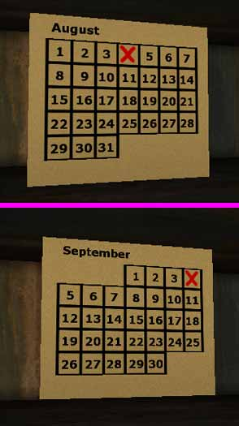

Tamearia Real Time Calendar
The real time calendar for Tamearia turned out to be more complicated to code than I realized. Fortunately I didn't have to store any actual calendar data here, I used the current date and the day of the week and worked backwards to figure out when the first day falls on.
This calendar doesn't update at midnight, but it could easily be altered to. For Tamearia the level changes at midnight, so it will recalculate it when the next level loads.
The main calendar class, which handles assigning dates and textures to each row of the calendar:
class Calendar extends Actor placeable; var int NumDays, StartDayOfWeek, CurrentDayOfWeek; var float CurrentDay; var() edfindable CalendarMesh CalendarMesh[6], MonthMesh; // The mapper places dummy actors in the level. // This gives a lot of freedom for customization. var texture RightTexture[6], LeftTexture[6], FullTexture, EmptyTexture; // Accounts for all possible combinations. simulated function PostBeginPlay() { local int i, m; local float YearF; super.PostBeginPlay(); MonthMesh.bMonthMesh = true; MonthMesh.Skins[0] = EmptyTexture; // Clear the month mesh's texture so there's no grid. switch(Level.Month) { case 1: MonthMesh.Dates[0] = "January"; break; case 2: MonthMesh.Dates[0] = "February"; break; case 3: MonthMesh.Dates[0] = "March"; break; case 4: MonthMesh.Dates[0] = "April"; break; case 5: MonthMesh.Dates[0] = "May"; break; case 6: MonthMesh.Dates[0] = "June"; break; case 7: MonthMesh.Dates[0] = "July"; break; case 8: MonthMesh.Dates[0] = "August"; break; case 9: MonthMesh.Dates[0] = "September"; break; case 10: MonthMesh.Dates[0] = "October"; break; case 11: MonthMesh.Dates[0] = "November"; break; case 12: MonthMesh.Dates[0] = "December"; break; } CurrentDayOfWeek = Level.DayOfWeek + 1; // Use 1-7, not 0-6 (easier for the math calculations). CurrentDay = Level.Day; NumDays = 31; // Default, will be changed later. YearF = Level.Year; if(Level.Month == 2) // Account for leap years. { NumDays = 28; // Leap years are every 4 years EXCEPT every 100 years is not, EXCEPT every 400 years is. :S if(int(YearF/400) == YearF/400) NumDays = 29; else if(int(YearF/4) == YearF/4 && !(int(YearF/100) == YearF/100)) NumDays = 29; } else if(Level.Month == 4 || Level.Month == 6 || Level.Month == 9 || Level.Month == 11) NumDays = 30; // Everyone knows the rhyme, right? // This block of code figures out what day the 1st of the month falls on. i = int(CurrentDay/7); StartDayOfWeek = CurrentDayOfWeek - ((CurrentDay - (7*i)) - 1); if(StartDayOfWeek < 1) StartDayOfWeek += 7; if(StartDayOfWeek == 1) // Assign the right grid texture based on when the 1st is. CalendarMesh[0].Skins[0] = FullTexture; else CalendarMesh[0].Skins[0] = RightTexture[7-StartDayOfWeek]; // This block of code tells each calendar row what days to display. for(m=8;m>StartDayOfWeek;m--) CalendarMesh[0].Dates[m-2] = ""@m - StartDayOfWeek; for(m=0;m<7;m++) CalendarMesh[1].Dates[m] = ""@(m + 9) - StartDayOfWeek; for(m=0;m<7;m++) CalendarMesh[2].Dates[m] = ""@(m + 16) - StartDayOfWeek; for(m=0;m<7;m++) CalendarMesh[3].Dates[m] = ""@(m + 23) - StartDayOfWeek; // This block is specifically for the last row. if(NumDays - (21 + (8 - StartDayOfWeek)) > 6) { CalendarMesh[4].Skins[0] = FullTexture; for(m=0;m<7;m++) CalendarMesh[4].Dates[m] = ""@(m + 30) - StartDayOfWeek; if(NumDays - (28 + (8 - StartDayOfWeek)) > 0) { CalendarMesh[5].Skins[0] = LeftTexture[NumDays - (28 + (8 - StartDayOfWeek)) - 1]; if(NumDays == 30) { CalendarMesh[5].Dates[0] = "30"; CalendarMesh[5].Skins[0] = LeftTexture[0]; } else if(NumDays == 31) { if(StartDayOfWeek == 6) CalendarMesh[5].Dates[0] = "31"; else if(StartDayOfWeek == 7) { CalendarMesh[5].Dates[0] = "30"; CalendarMesh[5].Dates[1] = "31"; } } } else CalendarMesh[5].Skins[0] = EmptyTexture; } else { CalendarMesh[4].Skins[0] = LeftTexture[NumDays - (21 + (8 - StartDayOfWeek)) - 1]; for(m=0;m<7;m++) { if((m + 30) - StartDayOfWeek <= NumDays) CalendarMesh[4].Dates[m] = ""@(m + 30) - StartDayOfWeek; } CalendarMesh[5].Skins[0] = EmptyTexture; } // These rows are always full on a calendar. CalendarMesh[1].Skins[0] = FullTexture; CalendarMesh[2].Skins[0] = FullTexture; CalendarMesh[3].Skins[0] = FullTexture; } DefaultProperties { RightTexture(0)=Texture'TameariaTextures.Calendar1Right' RightTexture(1)=Texture'TameariaTextures.Calendar2Right' RightTexture(2)=Texture'TameariaTextures.Calendar3Right' RightTexture(3)=Texture'TameariaTextures.Calendar4Right' RightTexture(4)=Texture'TameariaTextures.Calendar5Right' RightTexture(5)=Texture'TameariaTextures.Calendar6Right' LeftTexture(0)=Texture'TameariaTextures.Calendar1Left' LeftTexture(1)=Texture'TameariaTextures.Calendar2Left' LeftTexture(2)=Texture'TameariaTextures.Calendar3Left' LeftTexture(3)=Texture'TameariaTextures.Calendar4Left' LeftTexture(4)=Texture'TameariaTextures.Calendar5Left' LeftTexture(5)=Texture'TameariaTextures.Calendar6Left' FullTexture=Texture'TameariaTextures.CalendarFull' EmptyTexture=Texture'TameariaTextures.CalendarEmpty' bHidden=True }
Now the calendar mesh. Each mesh is one row of the calendar:
class CalendarMesh extends Actor placeable; //Offsets used for the number and red X to center them. var int Offsets[7], RedOffset[7], RedXScale[7], RedXDate; // Red X is used to mark the current day. var ScriptedTexture CalendarCanvas; var Material CalendarCanvasBackground, RedX; var Font CalendarCanvasFont; var string Dates[7]; var bool bMonthMesh; // If I'm the month mesh, write the month on me. simulated function PostBeginPlay() { local int i; super.PostBeginPlay(); // Create a scripted texture I can write to. CalendarCanvas = ScriptedTexture(Level.ObjectPool.AllocateObject(class'ScriptedTexture')); CalendarCanvas.SetSize(512,64); CalendarCanvas.Client = Self; CalendarCanvasBackground = Skins[0]; Skins[0] = CalendarCanvas; CalendarCanvasFont = Font(DynamicLoadObject("2k4Fonts.Verdana24", class'Font')); RedXDate = -1; // Default to off the calendar, in case the current date isn't on this row. for(i=0;i<7;i++) // Figure out what day to write the Red X to. { if(int(Dates[i]) == Level.Day) RedXDate = i; } } simulated event RenderTexture(ScriptedTexture Tex) { local int SizeX, SizeY; local color BackColor, ForegroundColor; ForegroundColor.R=0; ForegroundColor.G=0; ForegroundColor.B=0; ForegroundColor.A=255; BackColor.R=255; BackColor.G=255; BackColor.B=255; BackColor.A=0; Tex.DrawTile(0, 0, Tex.USize, Tex.VSize, 0, 0, Tex.USize, Tex.VSize, CalendarCanvasBackground, BackColor); Tex.TextSize(Dates[0], CalendarCanvasFont, SizeX, SizeY); if(bMonthMesh) // Write the month to me. { Tex.DrawText(55, 15, Dates[0], CalendarCanvasFont, ForegroundColor); } else // Different offsets for dates greater than 10. { if(int(Dates[0]) < 10) Tex.DrawText(Offsets[0], 15, Dates[0], CalendarCanvasFont, ForegroundColor); else Tex.DrawText(Offsets[0]-12, 15, Dates[0], CalendarCanvasFont, ForegroundColor); if(int(Dates[1]) < 10) Tex.DrawText(Offsets[1], 15, Dates[1], CalendarCanvasFont, ForegroundColor); else Tex.DrawText(Offsets[1]-12, 15, Dates[1], CalendarCanvasFont, ForegroundColor); if(int(Dates[2]) < 10) Tex.DrawText(Offsets[2], 15, Dates[2], CalendarCanvasFont, ForegroundColor); else Tex.DrawText(Offsets[2]-12, 15, Dates[2], CalendarCanvasFont, ForegroundColor); if(int(Dates[3]) < 10) Tex.DrawText(Offsets[3], 15, Dates[3], CalendarCanvasFont, ForegroundColor); else Tex.DrawText(Offsets[3]-12, 15, Dates[3], CalendarCanvasFont, ForegroundColor); if(int(Dates[4]) < 10) Tex.DrawText(Offsets[4], 15, Dates[4], CalendarCanvasFont, ForegroundColor); else Tex.DrawText(Offsets[4]-12, 15, Dates[4], CalendarCanvasFont, ForegroundColor); if(int(Dates[5]) < 10) Tex.DrawText(Offsets[5], 15, Dates[5], CalendarCanvasFont, ForegroundColor); else Tex.DrawText(Offsets[5]-12, 15, Dates[5], CalendarCanvasFont, ForegroundColor); if(int(Dates[6]) < 10) Tex.DrawText(Offsets[6], 15, Dates[6], CalendarCanvasFont, ForegroundColor); else Tex.DrawText(Offsets[6]-12, 15, Dates[6], CalendarCanvasFont, ForegroundColor); } if(RedXDate > -1) // If the current date is not on this row, don't draw it. Tex.DrawTile(RedOffset[RedXDate], 0, RedXScale[RedXDate], 64, 0, 0, 64, 64, RedX, BackColor); } DefaultProperties { RedX=Texture'TameariaTextures.RedX' Offsets(0)=55 Offsets(1)=120 Offsets(2)=180 Offsets(3)=245 Offsets(4)=304 Offsets(5)=363 Offsets(6)=420 RedOffset(0)=44 RedOffset(1)=108 RedOffset(2)=172 RedOffset(3)=234 RedOffset(4)=295 RedOffset(5)=355 RedOffset(6)=414 RedXScale(0)=64 RedXScale(1)=64 RedXScale(2)=62 RedXScale(3)=61 RedXScale(4)=60 RedXScale(5)=59 RedXScale(6)=59 Skins(0)=Texture'TameariaTextures.Calendar3Left' // Default so the mapper can tell which way it's oriented. DrawType=DT_StaticMesh StaticMesh=StaticMesh'TameariaMeshes.Misc.TheCalendar' bEdShouldSnap=True }
The calendar meshes are just blocks long enough to hold 7 days on them.
